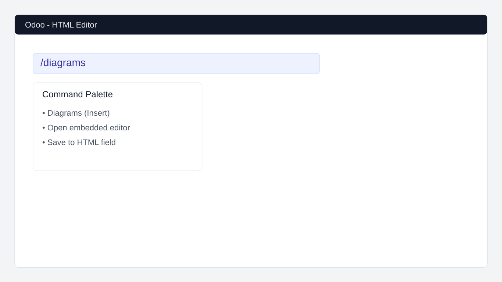
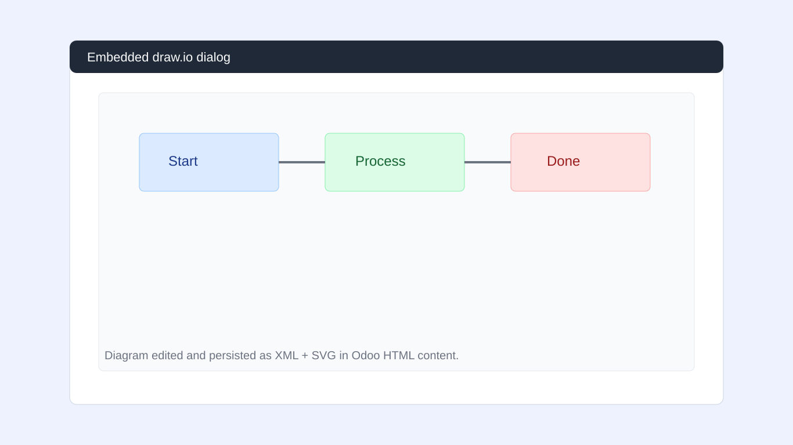

Diagrams Editor adds a native command in the Odoo HTML editor so users can create and update diagrams without leaving the form view.


Tested for Odoo 19.0 (Community/Enterprise).
The embedded editor is loaded from https://embed.diagrams.net. Diagram content is edited client-side and saved back to the Odoo HTML field by user action.